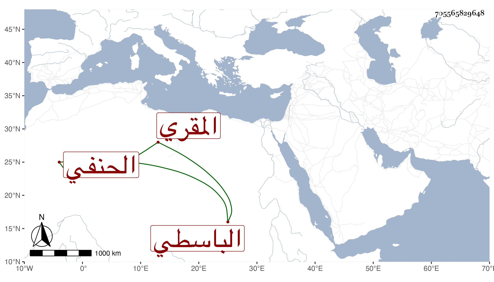

0902Sakhawi.DawLamic.ITO20230111-ara1.EIS1600.705565829648
Biography ID: 705565829648
348
أحمد بن محمد بن طلاداي شهاب الدين الباسطي لسكناه حارة عبد الباسط الحنفي المقري ويعرف بدقماق . ممن لازمني يسيرا في قراءة الشفا وغيره وقرأ على الزين جعفر السنهوري ثم على الناصري الأخميمي في القراءات وحفظ الشاطبية وربما اشتغل في العربية ولست أحمده .
